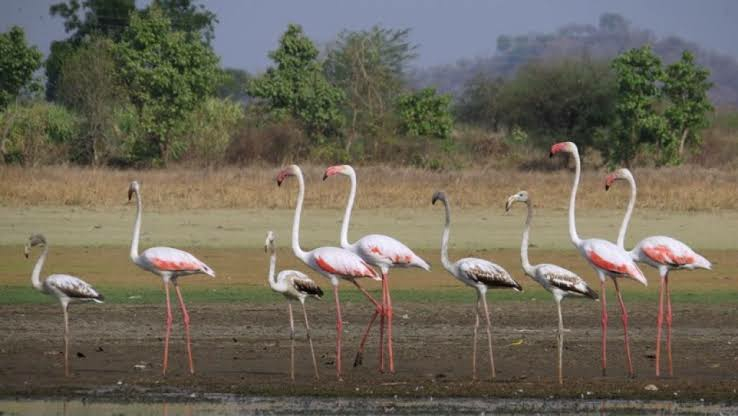
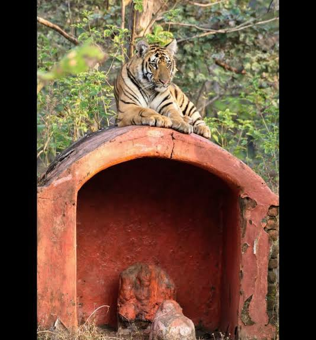
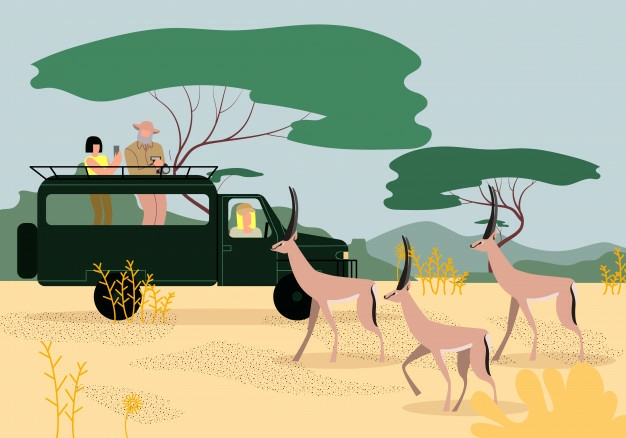

Tipeshwar Wildlife Sanctuary is situated in Yavatmal area that is an iscolated national park in Maharashtra.
The tipeshwar wildlife sanctuary provides every visitor a tremendous opportunity every visitor to travel around a wide range of wildlife species.
This Sanctuary is placed in Pandharkawada taluka of Yavatmal that encloses an area of 148.63 sq.km.
There are plenty of rivers such as Purna, Krishna, Bhima and Tapti irrigate the sanctuary from entire angles. Having lots of water from all these rivers, it is also popularly known as Green Oasis located in Southern Maharashtra. The temperature of the area is very pleasant throughout the year. The tipeshwar wildlife sanctuary area is completely a basalt area that is constructed by the blast of lava a century back. This area is highly treasured for the diversity of wealthy flora such as herbs, grasses, bamboo forests and animal life.
Tipeshwar Wildlife Mathni Gate Tipeshwar Wildlife Sanctuary Park Houses The park home includes 25 species of mammals, 125 species of birds, 22 species of amphibians and reptiles. Bengal Tigers, leopard cats, sloth bears, Indian leopards, Indian bison, and Indian gigantic squirrels are among of animal species live in this sanctuary. Tipeshwar wildlife sanctuary booking can be done through online or you can take help of local tour guide for safari travel booking to the wildlife sanctuary.
 Tipeshwar Wildlife Sanctuary is abode to 6 scarce reptile species. Over 182 bird species belonging to 46 bird folks are found here.
Also found 85 species of scarce birds, comprising the peafowl, are found in this wildlife sanctuary.
The road goes to Tipeshwar Wildlife Sanctuary is through Pandharkawada. The district headquarters, Yeotmal which is also destined as Yavatmal, is at around 75 km's from the wildlife sanctuary at Tipeshwar. Tipeshwar Sanctuary is around35 kilometers from Adilabad Railway station, the adjoining railway station in the proximate Telangana state. Amravati railway station and Badnera railway station are at about 165 kilometers distance from the wildlife sanctuary. Nagpur airport is around 172 km's distance from Tipeshwar wildlife forest. Mumbai is around 850 km's distance from Tipeshwar Wildlife Sanctuary.
The best time is to visit Tipeshwar forest is from October to February as there is heavy rainfall from June to September. The temperature in this sanctuary is quite pleasing all through the year.
Tipeshwar hotels or Accommodation is available at the Irrigation Rest House which includes VIP suite and a residence for 16. The park opens its gates for guests at 7 a.m. every morning and opens remain till 10 a.m. and 3 p.m. every afternoon and opens till 6 p.m.
Tipeshwar booking entry fees are available at Rs. 30 for per person and for traveling it takes Rs. 150 per gypsy or private car. It is compulsory to hire a tourist guide. They charge you Rs. 300 per safari.
Carry some snacks and food with ample of water and also take the camera to capture all memories in it.
Safari Booking Tipeshwars